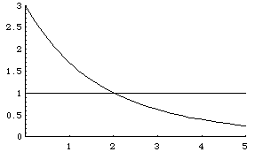

| Define a function f(D) by |
| f(D) = |dY1|D + |dY2|D + |dY3|D |
| Certainly, f(D) is a continuous function of D. Note |
| f(0) = |dY1|0 + |dY2|0 + |dY3|0 = 1 + 1 + 1 = 3. |
| Next, because each dYi satisfies |dYi| < 1, we have |
| limD → ∞f(D) = 0. |
| Finally, the graph of f(D) is decreasing because |
| f '(D) = |dY1|D⋅ln|dY1| + |dY2|D⋅ln|dY2| + |dY3|D⋅ln|dY3| < 0 |
| (each ln|dYi| < 0 because each |dYi| < 1) Here is an example graph of f(D). |
| Note the shape of the graph implies there is a unique value of D giving f(D) = 1. |
|  |
| Finally, if |
| Because the graph of f(D) is decreasing, the value of D making f(D) = 1 must satisfy D > 1. |
| Does this proof look familiar? |
Return to General Principle of Trading Time.